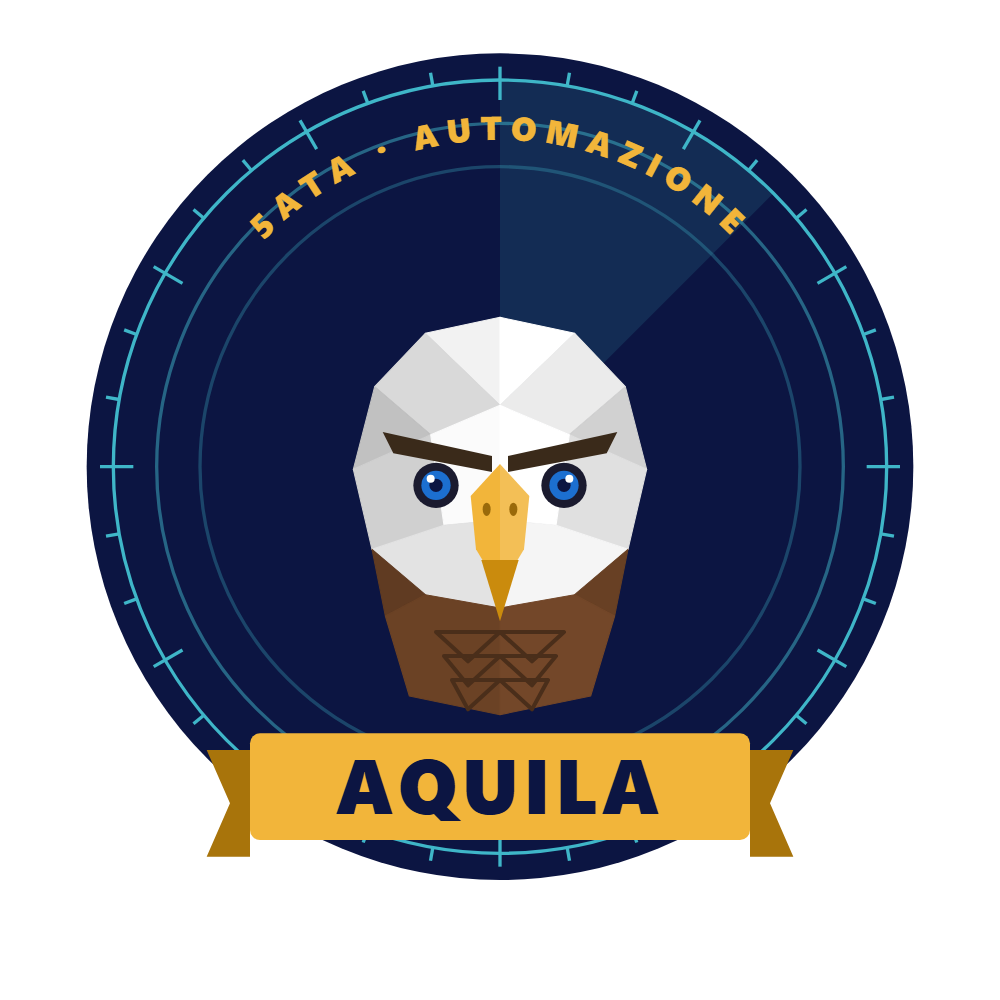
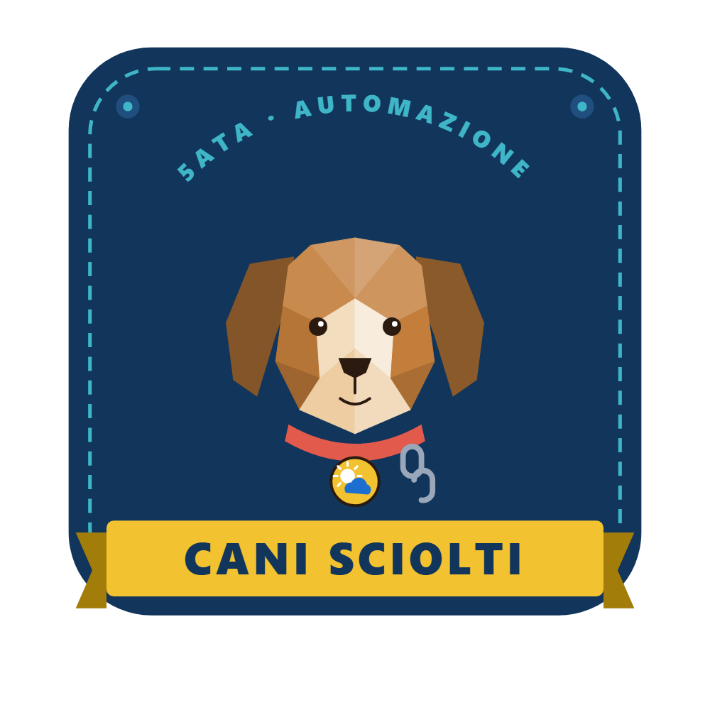
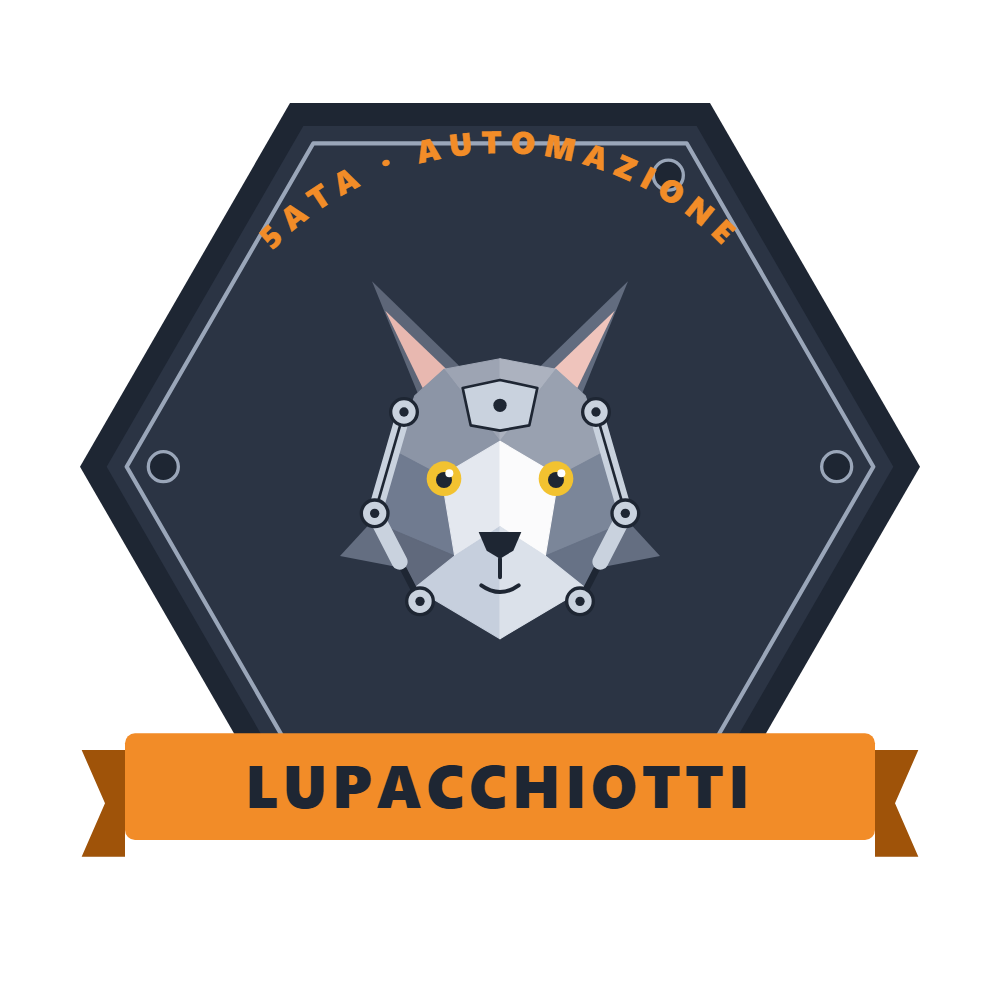
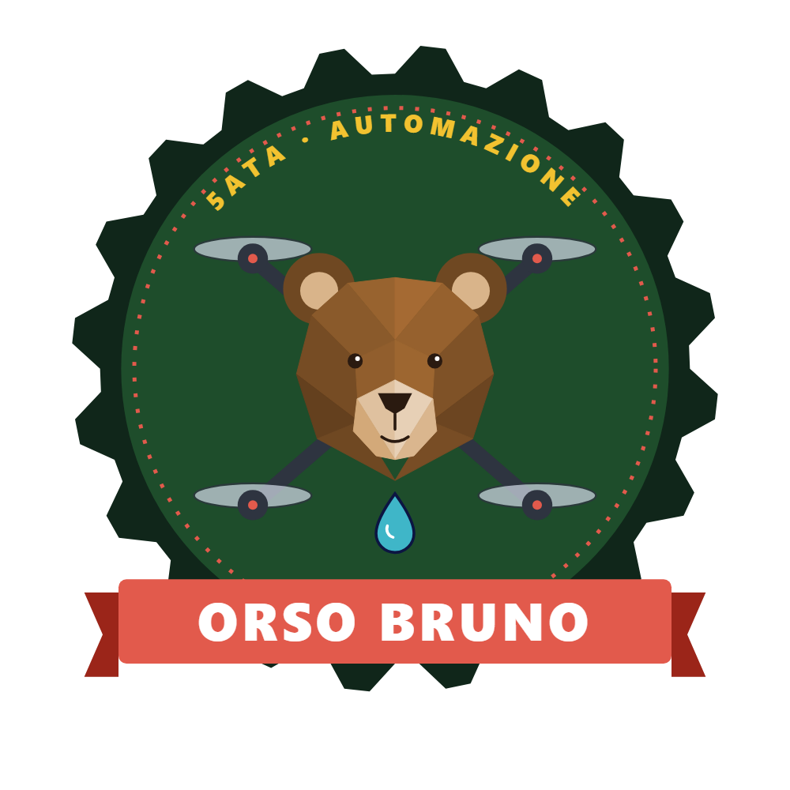

5ATA
Classe 5ATA
Anno del progetto di maturità · 6 squadriglie

Aquila
Spillatore automatico di birra
4 componenti
www.5ata-aquila.ata-lucarelli.it →
Cani Sciolti
Stazione di monitoraggio meteo
3 componenti
www.5ata-canisciolti.ata-lucarelli.it →Leoni
Robot intelligente
5 componenti
www.5ata-leoni.ata-lucarelli.it →
Lupacchiotti
Sistema esoscheletro
5 componenti
www.5ata-lupacchiotti.ata-lucarelli.it →
Orso Bruno
Drone antincendio
1 componenti
www.5ata-orsobruno.ata-lucarelli.it →
Pulcino Pio
Mano robotica
4 componenti
www.5ata-pulcinopio.ata-lucarelli.it →